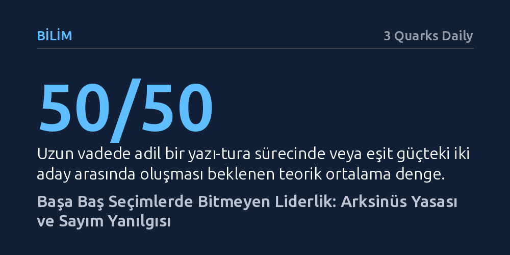

BILIM · 3 Quarks Daily · 2026-10-26
Başa baş geçen seçimlerde oy sayımı boyunca bir adayın sürekli önde gitmesi hileden değil, rastgele yürüyüşlerdeki lider değişimini nadir kılan arksinüs yasasından kaynaklanır. Olasılık teorisi, eşit şanslı taraflardan birinin sayımın neredeyse tamamında üstün kalmasını dengeli bir yarışa kıyasla çok daha olası görür.
Başa baş bir seçimde bir adayın sayım boyunca kesintisiz önde gitmesinin bir usulsüzlük göstergesi değil, olasılık yasalarının doğal bir sonucu olduğunu anlamayı sağlar.

Seçim dönemlerinde, bilhassa sonuçların birbirine çok yakın seyrettiği eyalet ve bölgelerde oyların çalındığına veya sayıma hile karıştığına yönelik iddialar hızla zemin bulur. Sayım boyunca adaylardan birinin neredeyse hiç geriye düşmeden sürekli önde gitmesi, genellikle sandık kurullarının taraflı davrandığı ya da sürecin manipüle edildiği şeklinde yorumlanır. Oysa bu tür şüphelerin altında, kasıtlı yalanların yanı sıra insan zihninin olasılık hesaplarını kavramadaki köklü sezgisel yanılgıları yatar.
Eşit oy potansiyeline sahip iki adayın yarıştığı bir seçim hayal edildiğinde, doğal beklenti sayım süresince üstünlüğün sık sık el değiştirmesidir. Zihnimiz, sürecin yaklaşık yarısında bir adayın, kalan yarısında ise diğer adayın önde gitmesini adil bir yarışın kaçınılmaz göstergesi sayar. Tıpkı adil bir madeni para art arda atıldığında tura ve yazı sayılarının birbirine yakın seyretmesi gerektiği düşünüldüğü gibi, sayım sürecinin her anında da bir dengelenme beklenir. Ancak olasılık kuramı bu sağduyusal beklentinin tümüyle yanlış olduğunu ortaya koyar.
Olasılık teorisinde bu şaşırtıcı durumu açıklayan temel ilke Arksinüs Yasası olarak adlandırılır. Bir madeni para art arda defalarca atıldığında ve her adımda tura ile yazı arasındaki fark kaydedildiğinde, ortaya klasik bir 'rastgele yürüyüş' tablosu çıkar. İnsan sezgisi farkın sıfır çizgisi etrafında sürekli salınacağını ve tarafların eşit sürelerle liderlik edeceğini varsaysa da Arksinüs Yasası bunun tam tersini söyler: Liderliğin yarış boyunca eşit paylaşılması en düşük ihtimalli durumdur; taraflardan birinin sayımın neredeyse tamamını önde götürmesi çok daha kuvvetli bir olasılıktır.
Süreç başladıktan bir süre sonra taraflardan biri tamamen tesadüfi olarak ufak bir avantaj yakalar. Rastgele yürüyüşlerde bir kez elde edilen bu avantajın tersine dönmesi ve sıfır noktasını aşarak diğer tarafa geçmesi matematiksel açıdan sanıldığından çok daha seyrektir. Dolayısıyla öne geçen tarafın liderliğini koruması ve hatta farkı giderek açması, sandık başındakilerin taraflı olmasından değil, olasılık dengesinin doğası gereği işaret değişimlerinin nadir gerçekleşmesinden kaynaklanır.
Uzun vadede toplam oylar veya atılan yazı-turalar elbette ortalamada eşitlenecektir; ancak zaman boyutu hesaba katıldığında kimin ne kadar süre lider kaldığını belirleyen Arksinüs Yasası daima aşırı uçları tercih eder. Bu gerçek, denk güçteki iki adayın bulunduğu bir sayımda erken safhada öne geçen adayın, bu avantaj serisini sonuna kadar sürdürme ihtimalinin liderliği sürekli devretme ihtimalinden belirgin biçimde yüksek olduğunu gösterir.
Bununla birlikte, teorik modeli reel politikaya taşırken önemli bir sınırın altını çizmek gerekir: Gerçek seçimlerde oylar hiçbir zaman tamamen rastgele bir sırayla sayılmaz. Şehir merkezleri ile kırsal bölgelerin sisteme giriş hızları, oy verme eğilimleri ve lojistik koşulları farklı olduğundan sandıklar bloklar halinde gelir. Yine de oyların görece dengeli ve rastgele açıldığı koşullarda dahi, baştan itibaren tek bir adayın aralıksız önde gitmesi bir sahtekarlığın kanıtı değil, matematiğin olağan işleyişidir.